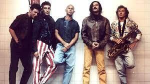

Los Redondos
Los Redondos, también conocidos como Patricio Rey y sus Redonditos de Ricota, fue una banda de rock argentino formada en la ciudad de La Plata en 1976. Está considerada como una de las bandas más influyentes y emblemáticas del rock en español y su música es reconocida por su originalidad y profundidad lírica.
La banda estaba formada por el cantante y letrista Carlos "Indio" Solari y el guitarrista Eduardo "Skay" Beilinson. Los Redondos desarrollaron un sonido propio que fusionaba elementos de rock psicodélico, punk y música folklórica argentina, creando una mezcla única y distintiva.
Sus letras, escritas principalmente por el Indio Solari, eran muy elaboradas y a menudo tenían una carga política y social importante, abordando temas como la violencia, la corrupción, la religión y la vida en la ciudad.
Los Redondos alcanzaron un gran éxito en Argentina y otros países de América Latina, especialmente en los años 80 y 90. Algunos de sus discos más reconocidos incluyen "Oktubre", "Un baión para el ojo idiota" y "Momo Sampler", entre otros.
Además de su música, Los Redondos también eran conocidos por sus conciertos y shows en vivo, que solían ser muy elaborados y con una gran puesta en escena. La banda se separó en 2001, pero su legado ha continuado a través de su música y su influencia en bandas posteriores como La Vela Puerca, Bersuit Vergarabat y El Cuarteto de Nos, entre otras.